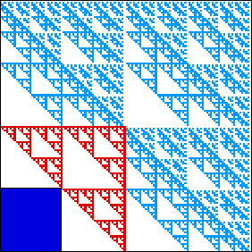
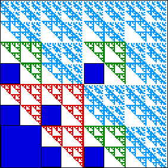
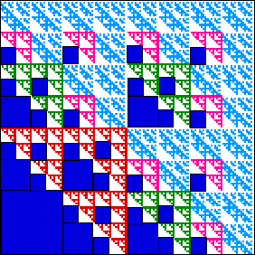
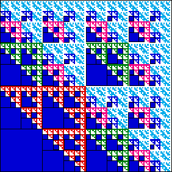
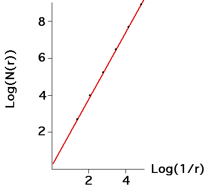

We count the empty squares that come from the gaskets.
|  |  |
| There is one empty square of side |
There are 6 empty squares of side |
|  |  |
| There are 27 empty squares of side |
There are 108 empty squares of side |
Organizing the data into a table can reveal a pattern in the number of empty squares.
| square side 1/4 | square side 1/8 | square side 1/16 | square side 1/32 | |
| gasket side 1/2 | 1*1 | 1*3 | 1*9 | 1*27 |
| gasket side 1/4 | 0 | 3*1 | 3*3 | 3*9 |
| gasket side 1/8 | 0 | 0 | 9*1 | 9*3 |
| gasket side 1/16 | 0 | 0 | 0 | 27*1 |
So we see the number of empty squares fit into this pattern:
| 1 | of side length 1/4 = 1/22 | |
| 2*3 | of side length 1/8 = 1/23 | |
| 3*32 | of side length 1/16 = 1/24 | |
| 4*33 | of side length 1/32 = 1/25 | |
| ... | ||
| (n+1)*3n | of side length 1/2n+2 |
So the number N(r) of squares of side length r needed to cover the shape is
| 42 - 1 | of side length 1/4 = 1/22 | |
| 82 - 4*1 - 2*3 | of side length 1/8 = 1/23 | |
| 162 - 42 - 4*2*3 - 3*32 | of side length 1/16 = 1/24 | |
| 322 - 43 - 42*2*3 - 4*3*32 - 4*33 | of side length 1/32 = 1/25 | |
| ... | ||
| (2n+2)2 - 4n - 4n-1*2*3 - 4n-2*3*32 - ... - (n+1)*3n | of side length 1/2n+2 |
A plot of
|  |
Return to dimension calculation.